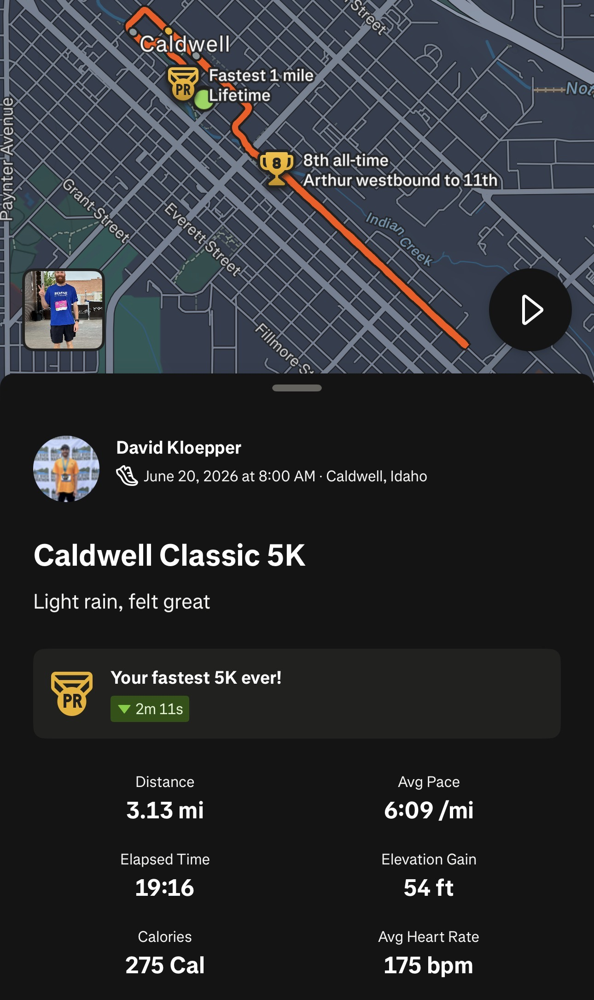
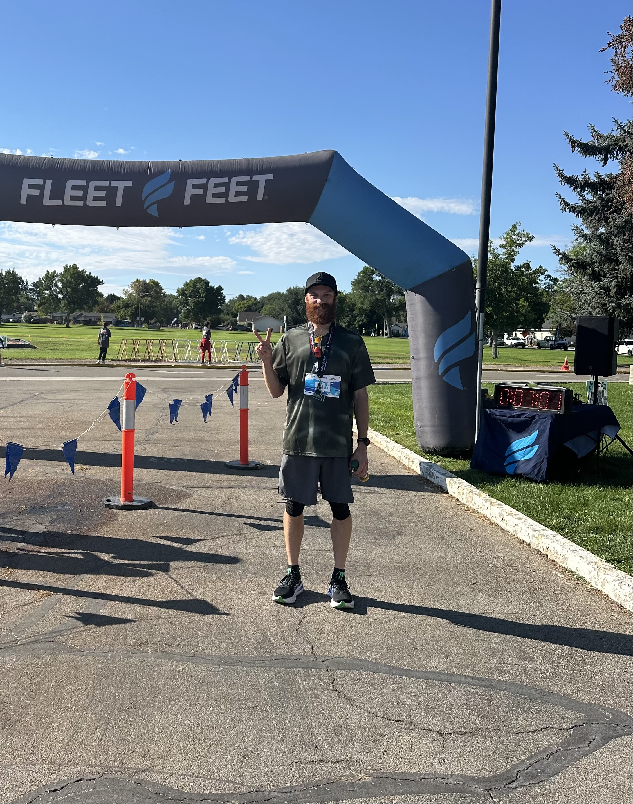
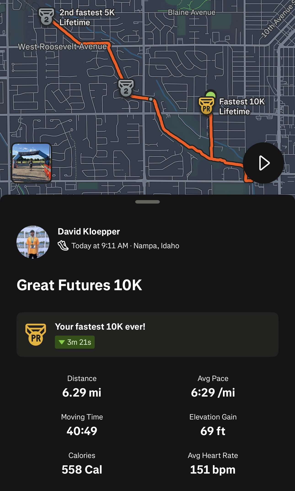

Running Goals
10K
Everyday
I started running daily about two years ago with the intention of completing 6.2 miles everyday, but the real goal has always been to run ultras.
Where it started
The habit that turned into everything else.
On September 15, 2024, I set out to run at least 10K every single day, along with 100 pushups, 100 situps, and 100 squats. I made it four days before the streak broke. After a few days of rest, I started again. It took a while to get used to running daily, and I ended up taking an entire two weeks off in December 2024. Today I'm on a streak of over four months of running 10K or more everyday.
The bodyweight work fell off along the way — life happens — but I'm bringing pushups, situps, and squats back into the daily routine now, alongside the pullups I added in 2025.
Early on, pace wasn't the point. I just needed a distance and effort I could repeat the next day, which usually meant somewhere around 9:00/mile. Now that same daily run is usually under 8:00/mile, and I've started layering in structure: a weekly speed session (a 4-mile track workout) and at least 10 miles of hills every week.
2026 goals
The plan was a 5K, a 10K, a half marathon, and a marathon this year. A second marathon got added along the way.



2025
A rough finish followed by redemption six months later.

Finished in 3:46:14, but only covered 22.2 of the 26.2 miles. Poor course markings sent me straight past a turnoff, and the mile markers jumped from 16 to 21 before I realized what had happened. Four other runners made the same mistake and were disqualified for it.
The lesson: study the course map in advance. I still finished the run, just not the race I meant to run.

Redemption. Finished in 3:43:44 — the full 26.2 miles this time (26.44 by Strava's count) — and a faster finish than Boise River despite covering four more miles.
Training block ahead
Right now, training is focused on the short road races this fall. After that, the volume climbs.
Once the fall road races wrap up, weekly mileage steps up from 60 to 100 miles over the course of November, then holds at 100 miles a week for all of December — the highest sustained volume I've run. Mileage tapers back down after that, heading into January 2027 and the Wilson Creek Frozen 50K: the first ultramarathon.
The long-term vision
This was the goal from day one — running 10K a day was always just the on-ramp.
When I started this whole thing, the long-term goal was to eventually run ultramarathons. That led me to the Tahoe 200 — a 200-mile race around the entire Lake Tahoe basin with roughly 40,000 feet of climbing — and from there to the Triple Crown of 200s, one of ultrarunning's premier endurance challenges: finishing the Bigfoot 200, the Tahoe 200, and the Moab 240 all in the same calendar year.
More recently, I've found myself drawn to Western States 100 — one of the ultrarunning "Big 3," alongside Badwater 135 and the Barkley Marathons. For now, none of these are on the actual calendar: they're expensive, and most require winning a lottery just to get a starting spot. The Idaho ultra scene is where the real plan lives.
2027
First ultra in January, then a season of Idaho trail races — the core plan plus a longer list still under consideration.
Also on the radar for 2027:
 RunsLog
RunsLog{kind=link}
{kind=link}
{kind=link}